海業デイリー
海業・水産・漁村観光のニュースをお届けします。制度や公募の情報は、出典にあたって確認したうえで掲載しています。
日付別
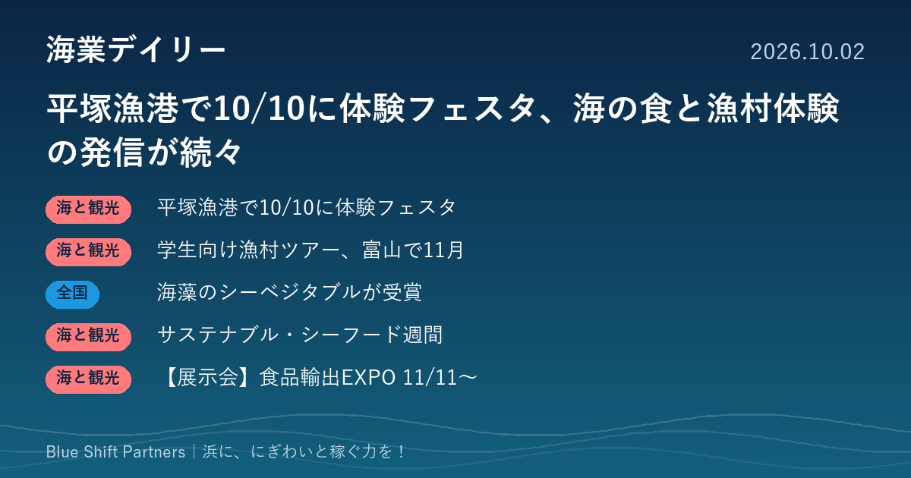
2026.10.02
平塚漁港で10/10に体験フェスタ、海の食と漁村体験の発信が続々

2026.10.01
漁港で藻場を育てる実証に成果、銚子では11月に海づくりフェスタ
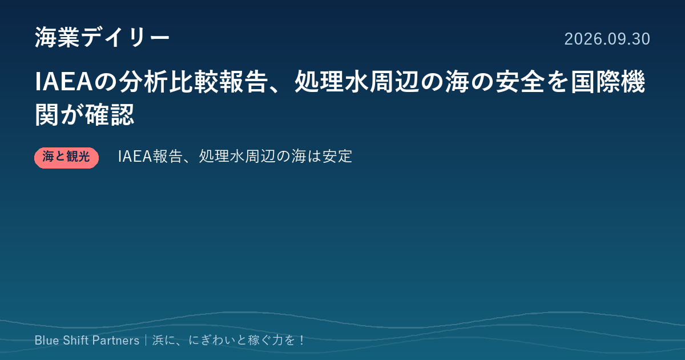
2026.09.30
IAEAの分析比較報告、処理水周辺の海の安全を国際機関が確認
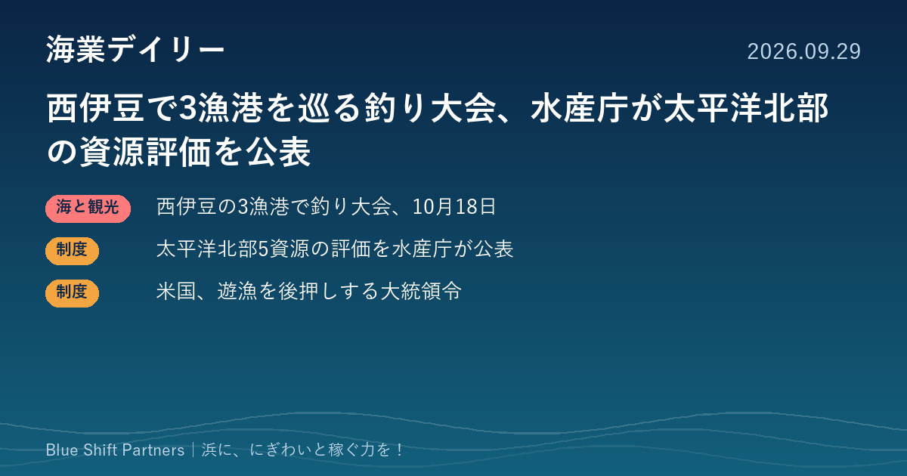
2026.09.29
西伊豆で3漁港を巡る釣り大会、水産庁が太平洋北部の資源評価を公表
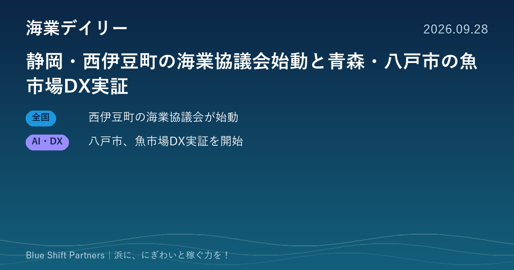
2026.09.28
静岡・西伊豆町の海業協議会始動と青森・八戸市の魚市場DX実証
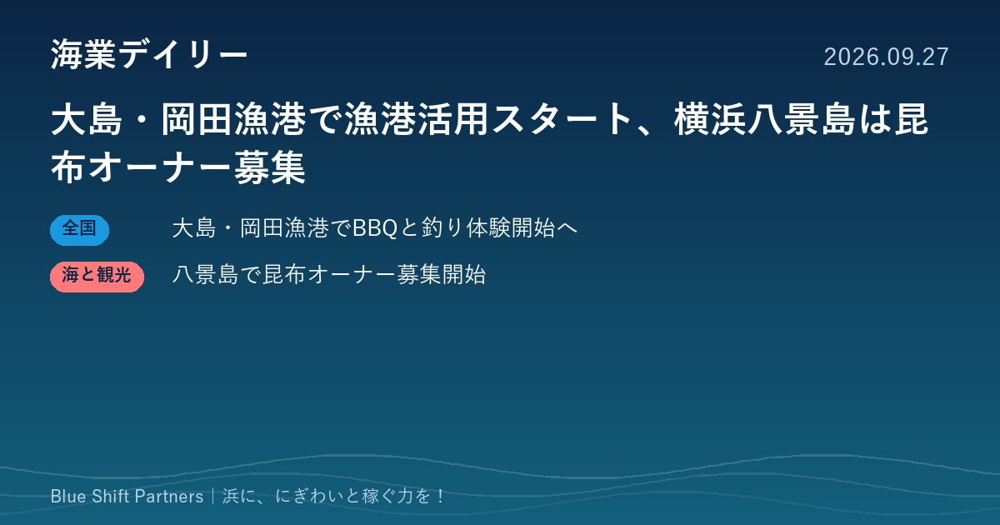
2026.09.27
大島・岡田漁港で漁港活用スタート、横浜八景島は昆布オーナー募集
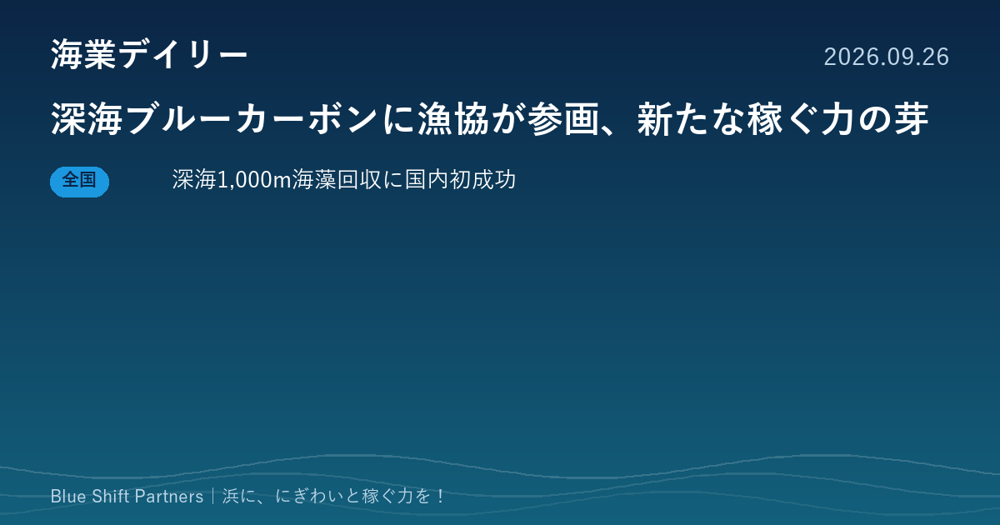
2026.09.26
深海ブルーカーボンに漁協が参画、新たな稼ぐ力の芽
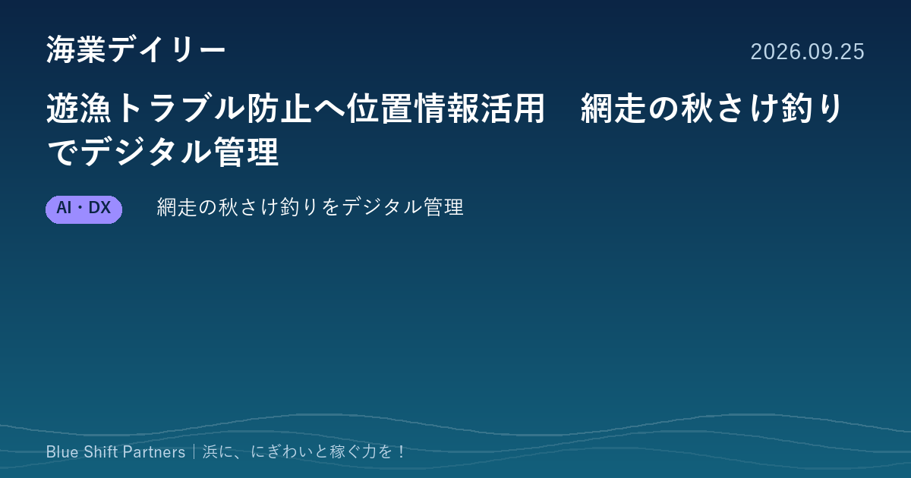
2026.09.25
遊漁トラブル防止へ位置情報活用 網走の秋さけ釣りでデジタル管理
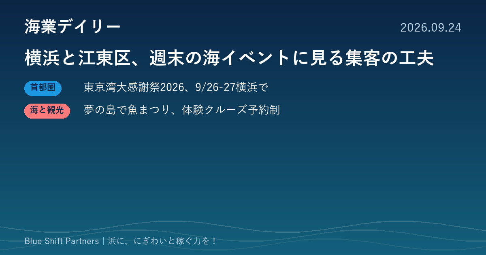
2026.09.24
横浜と江東区、週末の海イベントに見る集客の工夫
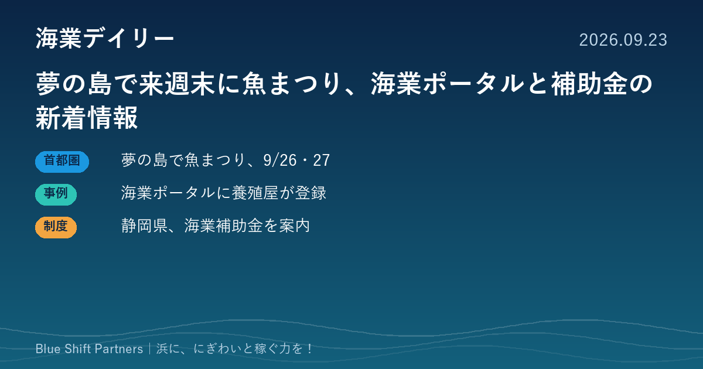
2026.09.23
夢の島で来週末に魚まつり、海業ポータルと補助金の新着情報
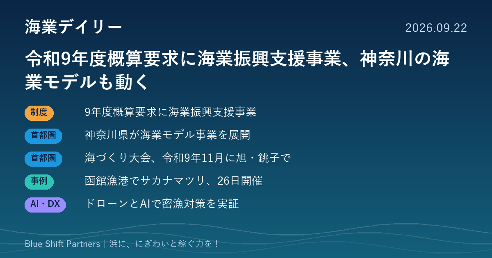
2026.09.22
令和9年度概算要求に海業振興支援事業、神奈川の海業モデルも動く
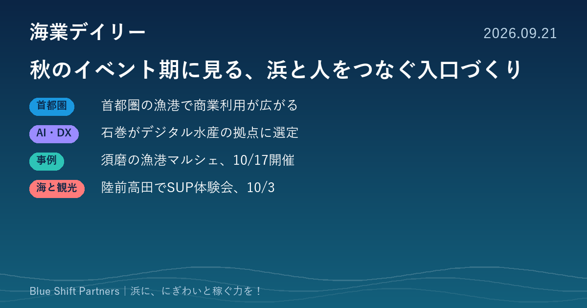
2026.09.21
秋のイベント期に見る、浜と人をつなぐ入口づくり
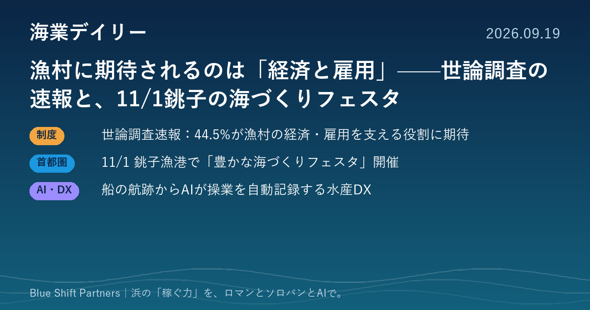
2026.09.19
漁村に期待されるのは「経済と雇用」——世論調査の速報と、11/1銚子の海づくりフェスタ